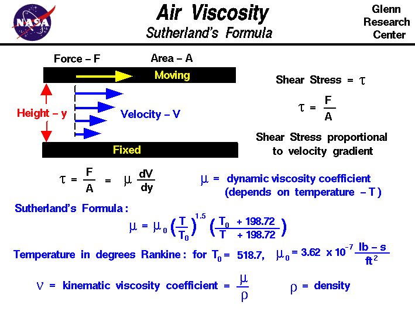
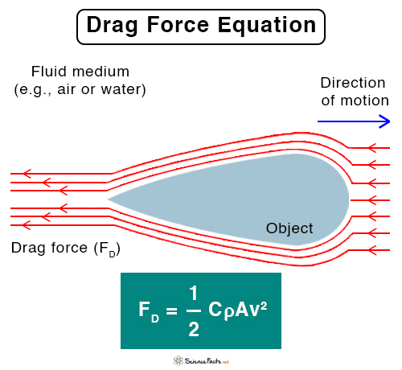

We already covered most of the theory surrounding fluids, such as the Bernoulli Principle, gas laws, pressure, and mass flow. In this course we'll cover the remaining subjects!
In fluid mechanics, a streamline is the line traveled by one water molecule in a fluid. This helps us understand where the water is heading and how it is moving. The velocity at any given point on the streamline can be found by calculating the slope of its tangent line.
There are 2 main types of flow we can discuss in fluids. They are easy to tell apart!
First is laminar flow, in which the fluid's flow can be broken up into layers, also called laminae. There is little to no disruption or mixing between these layers. This type of flow is generally paired with a slower velocity of the fluid, like in water from a tap.
Meanwhile, turbulent flow is the exact opposite. The layers mix and merge together, creating almost random and unpredictable motion of the water molecules. This type of flow is generally paired with a larger velocity of the fluid, like in a fast river.
Viscosity is a very simple property of a fluid to understand, it's how thick it is. We all know honey or syrup is much more viscous than water because it flows slower. The calculation of viscosity, however, is much more complex.
 From NASAIn this situation, there is a fluid flowing over a surface at the bottom. If we were to cut the fluid into different layers of height, we'd see that the top layers are moving much faster than the ones at the bottom, as caused by friction between the surface and the bottom layers of the fluid. The higher layers can move more freely. This difference in velocity between the layers creates shear stress, kinda like sliding two metal plates over eachother at different speeds. This is especially visible near the bottom, where the change in velocity is very large, causing very large shear stress.
We can clearly see that the change in velocity (dv/dy, with respect to distance from the bottom)is proportional to the shear stress (τ). This is because, where the velocity gradient becomes smaller, the shear stress also becomes smaller. The constant of proportionality we add into this will be called μ, which stands for the (dynamic) viscosity of the fluid.$$τ=μ\frac{du}{dy}$$
| Name | Symbol | Value |
|---|---|---|
| Dynamic Viscosity | μ | Fluid-specific (Pa*s) |
There is also kinematic viscosity, which accounts for the density of the fluid. This is calculated by dividing the dynamic viscosity by the density of the fluid.$$ν=\frac{μ}{ρ}$$The unit of kinematic viscosity is found like this:$$ν=\frac{Pa⋅s}{\frac{kg}{m³}}=\frac{\frac{N}{m²}⋅s}{\frac{kg}{m³}}=\frac{\frac{kg\frac{m}{s²}}{m²}⋅s}{\frac{kg}{m³}}=\frac{kg⋅s}{m⋅s²}⋅\frac{m³}{kg}=\frac{m²}{s}$$N=kg*(m/s²) from the second law of motion (F=ma).
| Name | Symbol | Value |
|---|---|---|
| Kinematic Viscosity | ν | Fluid-specific (m/s²) |
Let's say we have a body of water. The water molecules submerged within it feel cohesive forces (from cohesive bonds with other molecules) from all sides. Those cancel out and the molecules stay still.
However, molecules at the surface are only bonded to molecules below and to the side of them. They don't feel any cohesive forces from above, which causes them to be pulled inwards. The resistance to this pulling is what causes surface tension, a force directioned up from the body of water. To minimize the potential energy this effect creates - a particle is always trying to reach a lower energy level -, the surface molecules will arrange themselves in the optimal form, that being a collection of spheres (this has the lowest surface area for a volume) to minimize the surface area.
This surface tension - a small force perpendicular to the water going up -, is what allows bugs like water striders to move across lakes. The surface tension creates a sort of skin, a cohesive layer, at the surface of that body of water.
Calculating the surface tension force is much too complex, because it relies on a lot of different factors.
You've heard of 'drag' before, right? Maybe while talking about airplanes, because it's an important force for aerodynamics. Drag is the air resistance (or just resistance from a fluid in general) it feels when traveling through that air (or fluid). If an airplane travels through the air, it is experiencing fluid resistance (drag) from the air, which is trying to slow it down. This force is directioned opposite of the object's motion, so in the opposite direction of the flying plane.
 From ScienceFactsDeriving the formula for drag force is way too far-fetched, but this is it:$$F_{D}=\frac{1}{2}ρv^{2}C_{D}A$$Here, Fd is drag force, ρ is the density of the fluid, A is the cross-sectional area of the object experiencing drag force, and Cd is the drag coefficient (which depends on the material of the object and its shape).
| Name | Symbol | Value |
|---|---|---|
| Drag Coefficient | Cd | Material-specific (No unit) |
I already explained the basics of how airplanes stay airborne thanks to a lift force on their wings, due to the curved shape of those wings. I did not yet provide a formula, so here it is:$$L=\frac{1}{2}ρv^{2}SC_{L}$$Where L is lift force, ρ is the density of the fluid (air, most of the time), v is the speed of the air, S is the area (mostly cross-sectional), and Cl is the lift coefficient (which depends on the material of the object and its shape). We will not derive this equation.
| Name | Symbol | Value |
|---|---|---|
| Lift Coefficient | Cl | Material-specific (No unit) |
When an ball is falling through the air, it does not keep accelerating. It can reach its terminal velocity. This is the point at which the ball's velocity is no longer increasing, because the force of gravity is being counteracted by an opposite equal force. In almost every case, this is the sum of the drag force and buoyancy. As you know from the drag force equation, the faster the object, the greater the drag force slowing it down. As the force of gravity acts on our object, accelerating it (F=mg and F=ma) 9.81 meters per second every second, the drag force also increases, and at some point both will be equal (together with buoyancy), cancelling eachother out.
Let's derive how you can calculate the terminal velocity of an object due to drag. When this is the case, the weight (force of gravity) is equal to the drag force.$$gm=\frac{1}{2}ρv^{2}C_{D}A$$ $$v_{terminal}=\sqrt{\frac{2gm}{ρC_{d}A}}$$This is how you can calculate terminal velocity!